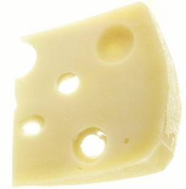

Este grupo incluye las leches fluidas y en polvo enteras, yogures de todo tipo y otras leches fermentadas, los quesos de pasta blanda, semidura y dura de cualquier tenor graso y tiempo de maduración. Este grupo nos aporta proteínas de buena calidad y es la fuente más importante de calcio en la alimentación.

Se recomienda a niños y adolescentes consumir 2 porciones diarias de este grupo de alimentos. Los niños deben consumir aproximadamente medio litro de leche por día. Por ejemplo, dos vasos de leche o 3 cucharadas de ricota o un trozo de queso del tamaño de una cajita de fósforos o un vaso de yogur, corresponderían a una porción de lácteos.